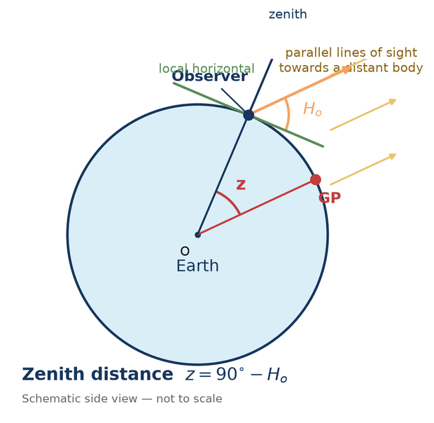
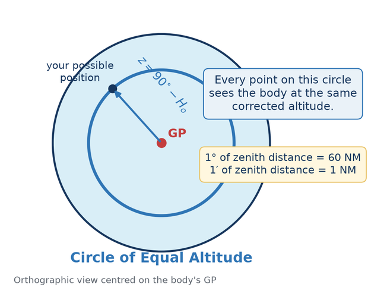
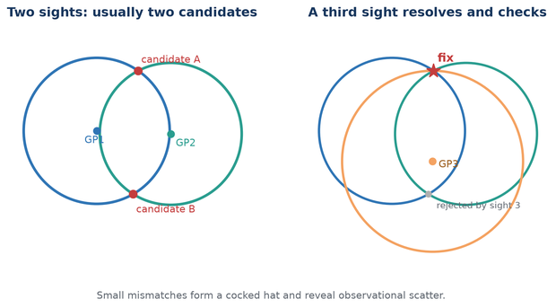
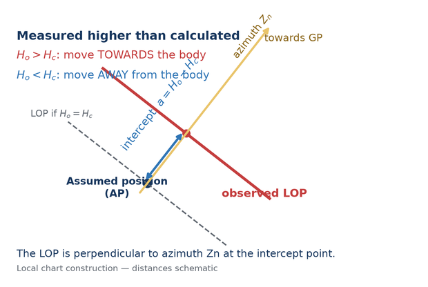
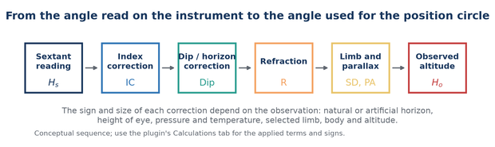
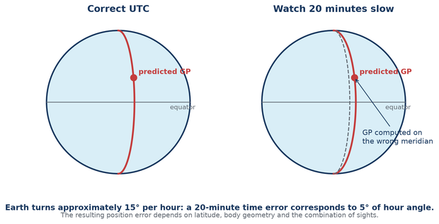
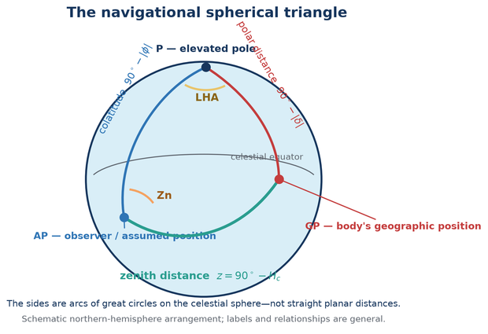
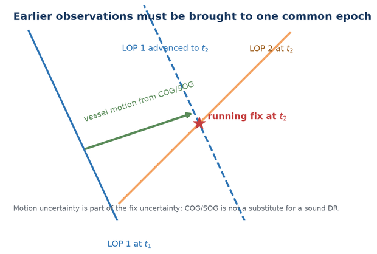
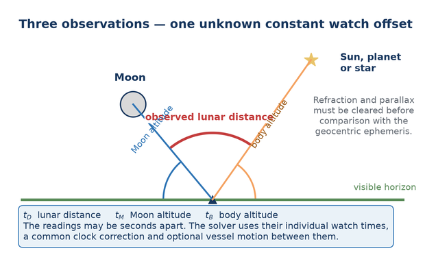
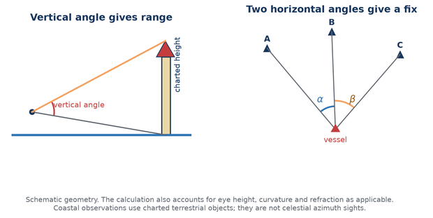

Principles, practical methods and plugin manual
Experimental v2 documentation
Celestial Navigation plugin 2.6 development fork
Documentation revision 15 August 2026
Designed for completely offline use at sea
This manual has two purposes. First, it explains celestial navigation from its simplest underlying geometry. Secondly, it gives operating instructions for the Celestial Navigation plugin for OpenCPN, including its planning, running-fix, time-integrity, lunar-distance, coastal and eclipse tools.
The plugin performs its ordinary celestial calculations offline. The eclipse planner also works offline once its separate DE440 data has been imported. Optional LOLA lunar-limb data is not required for navigation or for ordinary eclipse plotting.
| Symbol | Meaning |
|---|---|
| AP | Assumed position used to calculate an expected altitude and azimuth. |
| DR | Dead-reckoning position obtained from the previous position and estimated motion. |
| GP | Geographic position: the point on Earth directly beneath a celestial body. |
| Hs | Sextant altitude: the angle read from the sextant. |
| Ha | Apparent altitude after index and horizon/dip corrections. |
| Ho | Observed altitude: the fully corrected measured altitude used for navigation. |
| Hc | Computed altitude predicted at the AP for the observation time. |
| Zn | Calculated true azimuth of the body, conventionally 000°–360° from true north. |
| COP | Circle of Position, here normally a Circle of Equal Altitude. |
| LOP | Line of Position: the local straight-line approximation to a COP. |
| GHA | Greenwich Hour Angle, measured westward from Greenwich to the body's hour circle. |
| LHA | Local Hour Angle, the body's hour angle relative to the observer's meridian. |
| UTC / UT1 | UTC is civil atomic time with leap seconds; UT1 follows Earth rotation and is the astronomical argument required by hour angle. |
A sextant does not directly measure latitude or longitude. It measures an angle. At a recorded time, the navigator measures the altitude of the Sun, Moon, a planet or a star above the visible horizon. An almanac or ephemeris provides the body's corresponding position in the sky.
Imagine a line from the centre of a distant celestial body through the centre of Earth. Where that line meets Earth's surface is the body's geographic position (GP). To an observer at the GP, the body is at the zenith: directly overhead. The GP moves as Earth rotates and as the body moves in its orbit. Its latitude is the body's declination; its longitude is obtained from its Greenwich Hour Angle.
The corrected observed altitude Ho is the angle from the observer's horizontal plane up to the body. The complementary angle between the observer's zenith and the body is the zenith distance z.

The important geometric fact is that the angle at Earth's centre between the observer and the GP is also z. Therefore Ho tells us our angular distance from the GP. It does not yet tell us in which direction from the GP we lie.
All positions that are the same angular distance from the GP form a small circle on Earth. Every observer on that circle sees the body at the same corrected altitude at that instant. This is the Circle of Equal Altitude, a type of Circle of Position.

The nautical mile is tied to angular distance on Earth. For practical sight reduction, one minute of altitude difference corresponds to approximately one nautical mile measured along the direction to or from the GP. This is why a sextant error of one arcminute commonly appears as about one nautical mile of LOP displacement.
Two simultaneous sights of different bodies normally give two intersections. A DR position, hemisphere, third body or other evidence selects the intended one. A third independent circle also checks the consistency of the observations.

Real observations seldom meet at one mathematical point. Instrument error, horizon quality, timing, refraction, vessel motion and personal technique create a small triangle or more general scatter. The purpose of additional sights is not to make error disappear, but to expose and estimate it.
A Circle of Equal Altitude can have a radius of thousands of miles. Over the small area of a normal plotting sheet, a short arc of that circle is nearly straight. Navigators therefore use a tangent Line of Position (LOP).
Choose an Assumed Position (AP) near the DR. For the observation time and body, calculate:
Compare the corrected observed altitude Ho with Hc. Their signed difference is the intercept.

The sextant reading is not yet the altitude used to construct the circle. The plugin applies corrections appropriate to the body, limb, instrument, horizon and atmospheric conditions.

| Term | Purpose |
|---|---|
| Index correction | Removes the sextant's zero error. “On the arc, take it off; off the arc, put it on” is the traditional mnemonic. |
| Dip | Corrects the visible sea horizon below the observer's true horizontal plane. It depends principally on height of eye. |
| Refraction | Corrects atmospheric bending, greatest near the horizon and dependent on altitude, pressure and temperature. |
| Semidiameter | Converts a selected upper or lower limb of the Sun or Moon to the body's centre. |
| Parallax in altitude | Converts the topocentric direction at the observer to the required geocentric direction. It is particularly important for the Moon. |
Natural horizon: enter height of eye and normal atmospheric conditions. Artificial horizon: the measured doubled angle must be handled by the selected workflow; dip is not applied as for a sea horizon. Dip short: use when the visible waterline is at a finite distance rather than the astronomical sea horizon. Back sight: use only when the observation geometry and sign are understood.
Do not “improve” a raw observation to match an expected answer. Record the body, limb, Hs, watch time, horizon, eye height and environmental values. Let the correction and analysis stages remain reproducible.
A twilight fix normally uses two or more well-separated bodies observed in a short interval. Three bodies are preferable because they show scatter and reduce the risk of accepting the wrong two-circle intersection. Good azimuth spread matters more than collecting many bodies in one part of the sky.
Three LOPs that do not meet form a cocked hat. Its size and shape reflect observation and model errors, but it is not automatically a confidence region with a fixed probability. Consider horizon quality, repeated-sight scatter, timing, geometry, and known systematic bias before assigning meaning to it.
A run of sights can reveal blunders and personal trend. Retain the original readings. The Sight Sequence Analyzer can report residuals, scatter, trend, possible outliers and personal bias. Do not discard a point merely because a program labels it unusual; first look for a physical explanation.
Measurement certainty controls the plotted band around a COP/LOP. Time certainty represents uncertainty in the observation epoch. These values should describe the observation honestly; reducing the number only draws a thinner line and does not improve the sight.
The body's GP moves in longitude as Earth rotates. Earth turns approximately 15° per hour, 15′ of hour angle per minute and 15″ per second. A timing error therefore puts the calculated GP on the wrong meridian. The resulting position error depends on latitude, body motion, azimuth and the other sights—it is not always a simple one-for-one longitude correction.

UTC is the civil time broadcast by modern systems. UT1 follows actual Earth rotation and is the time argument underlying GHA. For ordinary sextant work the small UTC–UT1 difference is normally below other observational errors, but the distinction matters for rigorous prediction and eclipse timing. Future UTC cannot be known indefinitely because future leap seconds are not predictable.
The formal calculation uses a spherical triangle whose vertices are the elevated pole, the observer/AP and the body's GP. Its sides are colatitude, polar distance and zenith distance; its angles include LHA and azimuth. The plugin solves this geometry numerically. Understanding the triangle explains where Hc and Zn come from, but table manipulation is not required to use the plugin.

Here φ is latitude and δ is declination. An atan2 form is used for azimuth to preserve the correct quadrant.
The main list contains stored observations. Its columns show sight type, body, UTC time, measurement and colour. The eye symbol controls whether a sight is plotted and included where a workflow uses visible sights.
| Control | Purpose |
|---|---|
| New | Create an altitude, azimuth or lunar observation. |
| Fix… | Solve from suitable visible sights near a selected epoch. |
| Horizon Event… | Record observed sunrise or sunset timing and optional bearing. |
| Sun & Moon… | Open the offline event, body, best-sight, almanac, noon and Polaris planner. |
| Analyze Sights… | Analyze residuals and repeat-observation behaviour. |
| Lunar Tools… | Jointly solve several lunar observations, rank Moon–body pairs and check a sextant against computed angular distances. |
| Generate Almanac… | Build a tailored, completely offline voyage almanac and calculator-complete paper backup as a PDF. |
| Eclipses… | Search, plot and calculate offline solar-eclipse circumstances. |
| Coastal Sextant… | Use vertical-angle ranging or horizontal-sextant-angle fixing. |
| Duplicate / Edit / Delete | Manage a selected stored sight. Duplicate is useful for a run of sights. |
| Clock Offset | Apply a common correction to stored sight times. |
| Hide | Collapse or restore the sight list and controls. |
| Documentation | Open this completely offline manual. |
The panel displays computer local time with time zone, UTC, GNSS/NMEA UTC when valid RMC or ZDA sentences have been received, the system-to-GNSS difference, and system clock synchronisation information. On systems using chrony, the plugin reports synchronisation state, estimated offset and source age where available.
Use the panel to decide how much confidence to place in a captured time and to synchronise a deck watch. Hide the panel when screen space is limited.
The planner is completely offline. Set a position and time context, then select Calculate / refresh.
Position can be manual, current boat position, chart cursor, selected sight DR or last calculated fix. Time can be now, the selected sight, or a manual date/time. Manual entry may be UTC or computer local time; displayed event times may independently be UTC, computer local time or a fixed offset. The calculation itself uses the correct internal time scale.
Lists astronomical, nautical and civil dawn/dusk, sunrise, sunset, Moonrise, Moonset, local apparent noon and lunar transit when they occur. It reports UTC, selected display time, true bearing and observer position. High-latitude days may legitimately omit an event because the body does not cross the chosen altitude threshold.
The body list and sky plot show altitude, azimuth and usability. Suggested pairs and triads rank geometry and visibility; they are aids, not commands. Weather, deck obstruction, brightness, horizon quality and a navigator's ability to identify a body remain decisive. Create selected sight… transfers the body and planning context to sight entry.
Provides hourly GHA, SHA, declination, Hc and true Zn for the selected position/time context. Export CSV… creates a portable table for independent checking or a paper working sheet.
Generate Almanac… on the main Sights window creates an independent OpenCPN Voyage Almanac PDF. It is not an official Nautical Almanac and does not imitate an official publication's page design. It uses the same completely offline calculation engine as the planner.
Select any saved route in the generator. Alternatively, open the route's OpenCPN context menu and choose Generate fallback almanac…. That shortcut opens the same generator with the route, document title and default 150 NM off-course corridor preselected; all settings remain editable.
Self-contained with scientific calculator means that the PDF includes hourly Sun, Moon, Aries and navigational-planet data, the 57 navigational stars, corrections, formulae, procedures and forms needed to perform reductions with an ordinary scientific calculator. It does not mean that sextant, accurate time, plotting tools, training or judgement are no longer needed. Gate-6 output does not contain the many volumes of global precomputed sight-reduction tables needed for calculator-free tabular work.
The hourly geocentric ephemeris for every included body remains usable independently of the route. Coverage and observability choices compact the location-dependent suggestions and planning pages, not the universal data needed if the vessel leaves the expected track:
Daily rows are labelled in UTC. Earth rotation is evaluated using UT1 = UTC + DUT1. The generator never downloads DUT1: enter a current value obtained before departure, or leave it unchecked and the cover will record the explicit 0.000-second assumption and warning. Future leap seconds and future DUT1 cannot be known exactly in advance.
The live page count is structural and exact; it does not need to calculate every body merely to count pages. Preview first pages shows the cover, manifest and opening pages from the same semantic document model used by the PDF renderer. Output is first completed as a sibling temporary file and then renamed, so a failed calculation does not leave a plausible but partial final PDF.
Enable this option and enter true COG and SOG when event positions or sight planning should follow a vessel moving from the reference position and time. This is a constant-motion model. It cannot know future alterations, leeway or unmodelled current.
Observations made at different times belong to different vessel positions. They cannot simply be intersected as though simultaneous. Advance each earlier LOP by the vessel displacement from its observation time to a common reference epoch.

A long interval can improve azimuth crossing while increasing DR uncertainty. A morning-Sun/afternoon-Sun running fix is useful, but its precision depends as much on vessel motion as on the sextant observations.
Select the sights to display, open Analyze Sights…, choose whether to restrict analysis to the selected body, and set a stationary or moving observer model. The analyzer reports residuals, scatter, trend, possible outliers and estimated personal bias. A trend can indicate changing conditions, vessel motion, a systematic timing error or poor technique; it is not automatically a sextant error.
The planner predicts meridian passage. Around that time, observe a series of Sun altitudes and identify the maximum or fit the sequence. Enter the corrected Ho in Noon & Polaris → Sun at local apparent noon to solve latitude using declination and the meridian geometry. Noon primarily provides latitude; it is not by itself a normal two-dimensional fix.
Polaris is close to, but not exactly at, the north celestial pole. Select Polaris latitude, use a corrected Ho and the applicable time/position context. The helper applies the ephemeris rather than assuming that Ho equals latitude exactly. Polaris is a northern-hemisphere workflow.
Lunar distance uses the Moon's rapid motion against the Sun, planets or stars as a celestial clock. The observed Moon-to-body angular distance is corrected (“cleared”) for limb, refraction and parallax, then compared with the geocentric ephemeris over a search interval.

Enable The three angles have separate watch times when the readings were not simultaneous. The lunar-distance date/time is the reference epoch. Enter Moon-altitude and body-altitude watch times separately. Times near midnight are interpreted as the nearest occurrence within twelve hours of the reference reading.
If the vessel moved materially, enable Advance vessel between readings and enter true COG and SOG. The same unknown constant watch correction is applied to all three watch times; the intervals between them are preserved.
The solver does not use the crude “15 degrees per hour” shortcut as a longitude answer. It searches clock correction and reference position jointly against the lunar distance and altitude constraints. More than one physical candidate can remain. Reported numerical convergence does not remove geometric ambiguity or observational uncertainty.
One lunar triple contains three measured angles and can solve three primary unknowns—constant watch correction, latitude and longitude—but it supplies almost no redundancy. Several timed triples are much more useful: one shared solution can reveal scatter, weak geometry, a competing time/position minimum or a reading that disagrees with the others.
The reported correction is additional to the correction already displayed by the plugin. Apply watch correction explicitly shows the resulting total and asks for confirmation. Raw watch timestamps remain in the observation record.
Lunar Tools… → Lunar planner ranks the offline body catalogue for a selected UTC and position. It displays Moon and body altitude, centre separation, distance rate in arcminutes per hour and the approximate time change corresponding to 0.1′ of distance. A small time value means useful time sensitivity. The quality text also penalises hidden/low bodies, awkward sextant angles, very unequal altitudes and faint stars.
The ranking is a planning aid, not a visibility guarantee. Cloud, Moon phase/glare, twilight, haze, telescope field, the chosen limb/contact and the observer's ability remain decisive. Recalculate at candidate times and choose a pair you can identify unambiguously.
Lunar Tools… → Sextant check predicts the topocentric, refracted, apparent distance between two selected bodies for a stated UTC, position, pressure and temperature. Select centre-to-centre, near contact or far contact to match what was actually observed; limb contacts include the applicable semidiameters. Record repeated sextant readings, their uncertainty and any shade/note. The displayed correction is predicted minus observed: add it to the raw reading.
For checking scale or centering behaviour, prefer well-identified stars at similar, comfortable altitudes and away from the horizon. Star–star checks largely avoid limb and parallax ambiguity. Moon–star, Moon–planet and Sun/Moon pairs are valuable end-to-end checks, but incorrect UTC, position, limb choice or atmospheric conditions can masquerade as instrument error.
Build / save profile groups repeated checks by angular range and stores correction points, uncertainty, repeatability, instrument name and serial number in the plugin configuration. Select a saved profile to display its interpolated correction at the currently entered observed angle. Between tested angles the plugin uses straight-line interpolation; beyond the tested range it clearly marks the nearest endpoint rather than inventing a polynomial trend. The table is advisory and does not alter saved sights automatically, preserving the raw record and its provenance.
The Horizon Event workflow records first upper-limb appearance at sunrise or final upper-limb disappearance at sunset. Timing gives an approximate altitude constraint. An optional bearing adds a rough directional constraint.
Without a sextant, the apparent instant is affected by waves, observer height, abnormal refraction, horizon definition, extinction, limb recognition and reaction time. A handheld magnetic bearing adds compass, variation and deviation errors. Treat the result as a broad constraint to combine with other evidence—not as a sextant-quality fix.

Select Vertical angle / distance. Choose waterline-to-top when the object's waterline is visible or sea-horizon-to-top when it is beyond the horizon. Enter target coordinates, observed vertical angle, index error, charted top height, water level above the height datum and height of eye. Optionally add a corrected bearing observed at effectively the same epoch. Select Calculate and plot range.
Select Horizontal angles / fix. Enter three charted objects in left–centre–right visual order and the included left-centre and centre-right angles. Enter uncertainty and an approximate vessel position to choose among ambiguous solutions. Select Solve and plot HSA fix.
If the two angles were taken sequentially while underway, enable Advance the vessel between the two HSA readings and enter the interval, true COG and SOG. This is distinct from the celestial Azimuth sight type.
The eclipse planner is a separate specialist module within the plugin. It uses a locally imported JPL DE440s ephemeris to search events and calculate geometry without network access.
Local contact times are reported on the astronomical time basis stated in the dialog. Future UTC can differ because future leap seconds and Earth rotation cannot be known exactly years in advance. Eclipse planning is not a celestial-navigation fix.
| Symptom | Checks |
|---|---|
| No COP is visible | Confirm the eye icon is enabled; zoom out; check UTC/date, body, Hs and limb; increase plotted certainty temporarily; verify the circle is not far from the current viewport. |
| Hc or Zn is implausible | Check AP/DR latitude and longitude signs, UTC conversion, selected body, and whether “boat position” moved after the sight. |
| Intercept is enormous | Check degrees/minutes entry, west/east longitude, upper/lower limb, time zone/date rollover and double-applied clock correction. |
| Sunrise/sunset differs by about an hour | Distinguish UTC from local civil time and daylight-saving time. Verify the planner's independent entry-time and display-time selectors. |
| GNSS UTC unavailable | Confirm a valid NMEA RMC or ZDA sentence is reaching OpenCPN. The plugin does not infer GNSS time from position alone. |
| Chrony status unavailable | The computer may use another synchronisation service, chrony may not be installed, or its query interface may be unavailable. UTC display still uses the system clock. |
| Lunar solver finds several times | Narrow the search only when justified; check contact/limbs and altitudes; use DR/hemisphere or another sight to resolve candidates. |
| Lunar solution is unstable | Review distance and altitude uncertainties, sextant side/index error, body geometry, separate timestamps and vessel motion. |
| Joint lunar solution has alternates | Do not choose by RMS alone. Add observations with different bodies/geometry, narrow the time range only from independent evidence, and compare the candidate positions with DR or known hemisphere. |
| Joint lunar residual is flagged | Check transcription, contact/limb, individual timestamps, uncertainty and conditions. Robust mode retains the reading; investigate before excluding it from a new solution. |
| Sextant check predicts “unavailable” | One body is below the usable horizon, the bodies are identical, or the entered UTC/position is wrong. Select another pair/time and check UTC rather than local civil time. |
| Correction profile varies unexpectedly | Repeat the check, use similar-altitude star pairs, keep shades/technique identified, verify mechanical adjustment and compare only within the measured angular range. |
| Running fix is poor | Check the reference epoch, COG/SOG, set and drift, leeway, course alterations and observation geometry. |
| Eclipse controls unavailable | Import DE440s and recheck data status. LOLA is optional and should not block ordinary eclipse plotting. |
| Abbreviation | Expansion and use |
|---|---|
| A4 | International standard paper size used for the printable manual. |
| AP | Assumed Position. |
| BIPM | International Bureau of Weights and Measures; maintains international atomic time scales. |
| C1–C4 | First through fourth local eclipse contacts. |
| COG | Course Over Ground; use true degrees where the plugin says COG true. |
| COP | Circle of Position. |
| CSV | Comma-Separated Values file. |
| DE440 / DE440s | JPL Development Ephemeris 440 and its compact short-span kernel. |
| Dec, δ | Declination; celestial latitude north or south of the celestial equator. |
| DOCX | Office Open XML word-processing document; the editable contributor edition of this manual. |
| DR | Dead Reckoning (historically also “deduced reckoning”). |
| DUT1 | UT1 − UTC. |
| GHA | Greenwich Hour Angle. |
| GNSS | Global Navigation Satellite System. |
| GP | Geographic Position of a celestial body. |
| GPS | Global Positioning System; one GNSS constellation and a common shorthand for a satellite-derived position. |
| Ha | Apparent altitude after index and dip/horizon corrections. |
| Hc | Computed altitude at the AP. |
| Ho | Observed, fully corrected altitude. |
| HP | Horizontal parallax. |
| Hs | Sextant altitude. |
| HSA | Horizontal Sextant Angle. |
| HTML | HyperText Markup Language; the offline edition opened by the plugin's Documentation button. |
| IC | Index Correction. |
| IE | Index Error. |
| IERS | International Earth Rotation and Reference Systems Service. |
| JPL | Jet Propulsion Laboratory. |
| LAN | Local Apparent Noon. |
| LD / LDOpc | Lunar Distance / observed raw lunar-distance measurement with selected contact. |
| LDc | Cleared lunar distance. |
| LHA | Local Hour Angle. |
| LOLA | Lunar Orbiter Laser Altimeter. |
| LOP | Line of Position. |
| NMEA | National Marine Electronics Association; commonly refers to marine data sentence/protocol families. |
| NM | Nautical mile. |
| PA | Parallax in Altitude. |
| PCK | Planetary Constants Kernel used for body orientation data. |
| Portable Document Format; the fixed-layout display and printable edition of this manual. | |
| RA | Right Ascension. |
| RMC | NMEA Recommended Minimum Navigation Information sentence. |
| RMS | Root Mean Square; a summary measure of residual size. It does not by itself establish that a solution is correct. |
| SD | Semidiameter. |
| SHA | Sidereal Hour Angle. |
| SOG | Speed Over Ground in knots. |
| TAI | International Atomic Time. |
| TT | Terrestrial Time, used in ephemeris calculations. |
| UI | User Interface. |
| USNO | United States Naval Observatory. |
| UT | Universal Time; use the specifically stated form where precision matters. |
| UT1 | Universal Time derived from Earth rotation. |
| UTC | Coordinated Universal Time. |
| WMM | World Magnetic Model. |
| ZD | Zone Description in traditional nautical time notation; do not confuse with zenith distance z. |
| ZDA | NMEA Time & Date sentence. |
| Zn | True azimuth, normally 000°–360° clockwise from true north. |
| z | Zenith distance, 90° − altitude. |
| ΔT | TT − UT1, required when relating dynamical ephemeris time to Earth rotation. |
The Horizon Event and coastal bearing workflows display their convention: variation and deviation use east positive / west negative. Enter the raw compass observation only in a field labelled magnetic compass, then allow the workflow to display the effective true bearing. Do not pre-correct a bearing and also enter the same corrections.
| Scale | Role |
|---|---|
| UTC | Civil time used for observation records; discontinuous from TAI by an integer number of leap seconds. |
| UT1 | Earth-rotation time used for hour angle and stated eclipse circumstances. |
| TT | Uniform terrestrial time used for ephemerides. |
| ΔT | TT − UT1; modelled for future epochs when no observed value exists. |
The manual's diagrams are original deterministic drawings generated from
explicit geometry in docs/v2/generate_diagrams.py. They were
checked against the coordinate definitions and sight-reduction geometry in the
following primary or authoritative references. Online examples were used for
comparison, not copied.
This v2 manual is intended for contributor review. Corrections to navigation practice, notation, workflow or presentation are welcomed. The HTML, editable DOCX and printable PDF should always be generated from the same reviewed source revision.